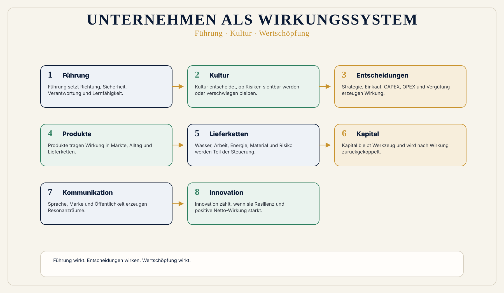

Isolierte Optimierung
Einkauf optimiert Kosten, Vertrieb Umsatz, Finance Rendite, HR Headcount und Nachhaltigkeit Berichtsfähigkeit. Wirkung entsteht aber im Zusammenhang.
 Wirkungsökonomie
Wirkungsökonomie
Für wen · Unternehmen
Wirkungsorientiertes Management ist keine Nachhaltigkeitsabteilung. Es ist eine neue Führungslogik.
Unternehmen wirken immer: durch Produkte, Preise, Lieferketten, Führung, Kultur, Kapital, Kommunikation, Daten, Anreize und Entscheidungen.
Die zentrale Frage lautet deshalb nicht mehr nur: Wie steigern wir Gewinn? Sondern: Welche Wirkung erzeugt unser Unternehmen - und wie koppeln wir diese Wirkung in Führung, Strategie, Kapital, Einkauf, Innovation und Organisation zurück?
ESG ist dabei nicht der Kern, sondern ein mögliches Abfallprodukt guter, resilienter und wirkungsorientierter Unternehmensführung.
Warum diese Perspektive wichtig ist
Klassische Unternehmensführung misst Umsatz, Gewinn, Rendite, Wachstum, Auslastung, Effizienz und KPI-Erfüllung. Diese Größen sind nicht wertlos. Aber sie zeigen Bewegung, nicht Richtung.
Ein Unternehmen kann effizient sein und zugleich Risiken in Lieferketten, Kultur, Gesundheit, Klima, Demokratie oder Zukunftsfähigkeit erzeugen.
ESG und CSRD sind wichtige Anschlussräume. Sie lösen aber den Kernfehler nicht, wenn sie nur Berichtspflichten bleiben. Reporting beschreibt. Wirkungsorientiertes Management verändert Entscheidungen.
Was heute falsch läuft
Einkauf optimiert Kosten, Vertrieb Umsatz, Finance Rendite, HR Headcount und Nachhaltigkeit Berichtsfähigkeit. Wirkung entsteht aber im Zusammenhang.
Hierarchische KPI-Systeme melden Zielerfüllung, fragen aber zu selten, welche Zustände durch diese Ziele verändert werden.
Billige Lieferanten, toxische Kultur oder falsche Boni können kurzfristig Zahlen stabilisieren und langfristig Resilienz zerstören.
Warum Reparatur nicht reicht
ESG und CSRD liefern Anschlussdaten. Sie reichen aber nicht, wenn sie als Berichtspflicht enden. Reporting beschreibt Risiken und Kennzahlen; wirkungsorientiertes Management verändert Strategie, Einkauf, Kapital, Kultur, Vergütung und Innovation.
Die WÖk setzt beim Führungsmaßstab an: Wirkung wird nicht an eine Nachhaltigkeitsabteilung delegiert, sondern in Entscheidungen zurückgekoppelt.
WÖk-Verschiebung
Die WÖk liest Unternehmen als Wirkungssysteme. Führung wird zur Systemsteuerung, nicht zur Kontrolle einzelner Kennzahlen. Kapital bleibt Werkzeug. Gewinn bleibt Ergebnis. Wettbewerb bleibt. Aber die Zielgröße verschiebt sich: positive Netto-Wirkung für Mensch, Planet und Demokratie.
Wirkungsorientiertes Management bedeutet, dass Wirkung in normale Führungsentscheidungen eingeht: Strategie, Produktentwicklung, Einkauf, CAPEX, OPEX, Portfolio, Risiko, Vergütung, Führung, Kultur, Kommunikation und Innovation.
Die alte Logik lautet: KPI -> Kontrolle -> Zielerfüllung -> Bonus. Die WÖk-Logik lautet: Wirkung -> Rückkopplung -> Lernen -> Anpassung -> Resilienz.
Resiliente Wertschöpfung verbindet Lieferkettenwirkung, Datenqualität, regionale Stabilität, Kreisläufe, faire Arbeit, Energie- und Ressourcensicherheit, Redundanz und Lernfähigkeit. Das betrifft Mitarbeitende ebenso wie Ressourceneffizienz, Cradle2Cradle, Kapitalzugang und Produktlogik.
Konkreter Gewinn
Was nicht passiert
Die WÖk schafft Gewinn nicht ab. Sie macht Gewinn zum Resultat tragfähiger Wirkung.
Sie schafft Eigentum nicht ab. Sie bindet Eigentum an Wirkung.
Sie ersetzt Management nicht durch Moral, sondern blinde Steuerung durch Rückkopplung.
Wirkungspfad
Konkretes Beispiel
Ein Unternehmen wählt zwischen zwei Lieferanten. Der erste ist billiger, aber mit Wasserstress, unsicheren Arbeitsbedingungen und geopolitischem Risiko verbunden. Der zweite ist teurer, aber kreislauffähiger, transparenter und resilienter. In der alten Logik gewinnt der billigere Lieferant. In der WÖk-Logik wird sichtbar: Der niedrigere Preis ist ein verdecktes Risiko.
Visual
Links lineare KPI-Schleife: Umsatz -> Kosten -> Gewinn -> Bonus. Rechts WÖk-Schleife: Entscheidung -> Wirkung -> Rückkopplung -> Lernen -> Resilienz -> Gewinn als Ergebnis. Zusätzlich Netzwerk-Knoten für Mitarbeitende, Lieferketten, Kapital, Kultur, Produkte und Kunden.

Vertiefung
Die nächste Frage lautet nicht, wie diese Zielgruppe nachhaltiger wird. Sie lautet: Welche alte Steuerungslogik erzeugt das Problem, und wie verändert Wirkung die Logik selbst?
Weiterlesen im Blog
Quellenbasis / Einordnung